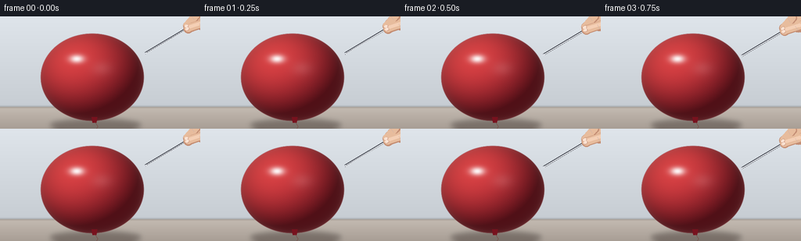
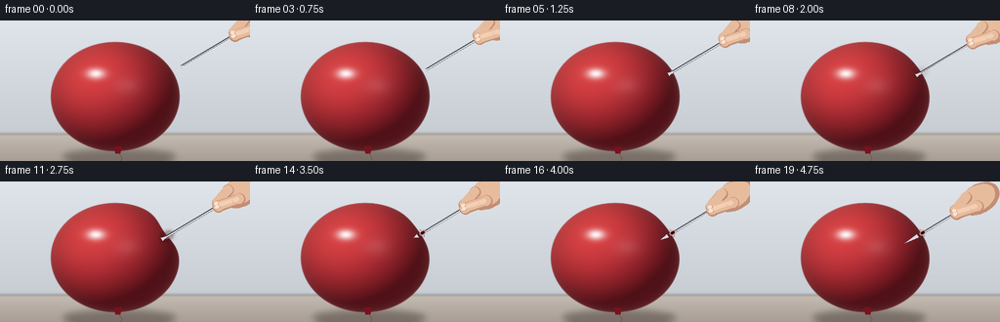

CODING AGENTS AS PIXEL WORLD MODELS
traex/Seed-2.1-Pro-0915 · phygen_021
点击播放 · 原生 RGB 像素
逐轮保存的候选
回放视频、检查图与代码变化。
每份候选均可单独播放。实际图片检查记录在下方工具轨迹中。
候选 01播放与检查图
点击播放 · 原生 RGB 像素


展开代码变化
--- 上一保存版本
+++ 本次保存版本
@@ -0,0 +1,260 @@
+"""Text-to-video: a hand slowly presses a needle into an inflated balloon.
+
+Renders every frame procedurally (numpy + PIL) at 2x supersampling, then
+downscales to 256x144. No external assets or models are used.
+"""
+import numpy as np
+from PIL import Image, ImageDraw, ImageFilter
+
+import artifact_io
+
+W, H, N, FPS = 256, 144, 20, 4
+S = 2 # supersampling factor
+
+# ---------------------------------------------------------------- geometry
+CX, CY, RX, RY = 118.0, 78.0, 66.0, 56.0
+TH = np.deg2rad(-27.0)
+CT, ST = np.cos(TH), np.sin(TH)
+PX, PY = CX + RX * CT, CY + RY * ST
+U = np.array([CT / RX, ST / RY])
+U = U / np.linalg.norm(U) # outward surface normal / needle axis
+PERP = np.array([-U[1], U[0]])
+NEEDLE_LEN = 70.0
+
+# (frame, needle advance D, membrane dent depth): D<0 gap; 0 touches;
+# after frame 14 the membrane punctures and the dimple relaxes.
+KEYS = [(0, -13.0, 0.0),
+ (6, 0.0, 0.0),
+ (13, 8.5, 8.5),
+ (14, 10.5, 2.6),
+ (19, 21.0, 1.6)]
+
+
+def smoothstep(a, b, x):
+ t = np.clip((x - a) / (b - a), 0.0, 1.0)
+ return t * t * (3 - 2 * t)
+
+
+def frame_pose(i):
+ for k in range(len(KEYS) - 1):
+ f0, d0, e0 = KEYS[k]
+ f1, d1, e1 = KEYS[k + 1]
+ if f0 <= i <= f1:
+ t = smoothstep(f0, f1, i)
+ return d0 + (d1 - d0) * t, e0 + (e1 - e0) * t
+ return KEYS[-1][1], KEYS[-1][2]
+
+
+def sc(v):
+ return v * S
+
+
+def capsule(draw, p, q, width, fill):
+ p = (sc(p[0]), sc(p[1]))
+ q = (sc(q[0]), sc(q[1]))
+ w = sc(width)
+ draw.line([p, q], fill=fill, width=int(w))
+ r = w / 2
+ draw.ellipse([p[0] - r, p[1] - r, p[0] + r, p[1] + r], fill=fill)
+ draw.ellipse([q[0] - r, q[1] - r, q[0] + r, q[1] + r], fill=fill)
+
+
+def rot_ellipse(layer, cx, cy, rx, ry, angle, fill):
+ a = np.linspace(0, 2 * np.pi, 40)
+ ca, sa = np.cos(angle), np.sin(angle)
+ x = rx * np.cos(a)
+ y = ry * np.sin(a)
+ pts = list(zip(((ca * x - sa * y + cx) * S).tolist(),
+ ((sa * x + ca * y + cy) * S).tolist()))
+ ImageDraw.Draw(layer).polygon(pts, fill=fill)
+
+
+# ------------------------------------------------------------- background
+def make_background():
+ w, h = W * S, H * S
+ top = np.array([223, 229, 235], np.float32)
+ mid = np.array([199, 205, 211], np.float32)
+ floor0 = np.array([196, 187, 178], np.float32)
+ floor1 = np.array([168, 158, 149], np.float32)
+ HOR = 116.0
+ ys = (np.arange(h)[:, None] + 0.5) / S
+ wall_t = np.clip(ys / HOR, 0, 1)
+ wall = top * (1 - wall_t[..., None]) + mid * wall_t[..., None]
+ fl_t = np.clip((ys - HOR) / (H - HOR), 0, 1)
+ floor = floor0 * (1 - fl_t[..., None]) + floor1 * fl_t[..., None]
+ rows = np.where((ys < HOR)[..., None], wall, floor)
+ bg = np.broadcast_to(rows, (h, w, 3)).astype(np.uint8).copy()
+ out = Image.fromarray(bg, "RGB").convert("RGBA")
+ seam = Image.new("RGBA", (w, h), (0, 0, 0, 0))
+ ImageDraw.Draw(seam).rectangle(
+ [0, sc(HOR - 0.6), w, sc(HOR + 0.6)], fill=(90, 84, 80, 70))
+ out = Image.alpha_composite(out, seam.filter(ImageFilter.GaussianBlur(sc(0.8))))
+ sh = Image.new("RGBA", (w, h), (0, 0, 0, 0))
+ rot_ellipse(sh, CX + 4, 139.5, 58, 8, 0.0, (40, 30, 26, 95))
+ out = Image.alpha_composite(out, sh.filter(ImageFilter.GaussianBlur(sc(3.2))))
+ return out
+
+
+# ---------------------------------------------------------------- balloon
+def render_balloon(dent):
+ w, h = W * S, H * S
+ xs = (np.arange(w)[None, :] + 0.5) / S - CX
+ ys = (np.arange(h)[:, None] + 0.5) / S - CY
+ ang = np.arctan2(ys, xs)
+ rr = np.hypot(xs, ys)
+ rb = 1.0 / np.sqrt((np.cos(ang) / RX) ** 2 + (np.sin(ang) / RY) ** 2)
+ da = np.arctan2(np.sin(ang - TH), np.cos(ang - TH))
+ surface = rb - dent * np.exp(-(da ** 2) / (2 * np.deg2rad(13) ** 2))
+ alpha = np.clip((surface - rr) / 0.9 + 0.5, 0, 1)
+
+ nx = xs / RX
+ ny = ys / RY
+ inside = (nx ** 2 + ny ** 2) < 1
+ nz = np.sqrt(np.clip(1 - nx ** 2 - ny ** 2, 0, 1))
+ L = np.array([-0.5, -0.6, 0.75])
+ L /= np.linalg.norm(L)
+ diff = np.clip(nx * L[0] + ny * L[1] + nz * L[2], 0, 1)
+ dark = np.array([112, 14, 32], np.float32)
+ main = np.array([205, 40, 58], np.float32)
+ warm = np.array([238, 96, 82], np.float32)
+ warm_mix = np.clip(diff * 0.5, 0, 1)[..., None]
+ col = (main[None, None] * (1 - warm_mix) + warm[None, None] * warm_mix)
+ col *= (0.42 + 0.62 * diff)[..., None]
+ col *= (0.72 + 0.28 * nz)[..., None]
+ rim = np.clip(1 - nz, 0, 1)
+ col += np.array([255, 205, 190])[None, None] * (rim ** 3)[..., None] * 0.22
+ g1 = np.exp(-(((nx + 0.30) / 0.14) ** 2 + ((ny + 0.42) / 0.095) ** 2))
+ g2 = np.exp(-(((nx - 0.18) / 0.20) ** 2 + ((ny + 0.20) / 0.16) ** 2))
+ spec = np.clip(g1 * 0.95 + g2 * 0.10, 0, 1)
+ col = col * (1 - spec[..., None]) + np.array([255, 255, 255]) * spec[..., None]
+ col = np.where(inside[..., None], col, dark[None, None])
+ col = np.clip(col, 0, 255).astype(np.uint8)
+ rgba = np.dstack([col, (alpha * 255).astype(np.uint8)])
+ return Image.fromarray(rgba, "RGBA")
+
+
+def draw_balloon_extras(base, dent, punctured):
+ d = ImageDraw.Draw(base)
+ kx, ky = CX + 2.0, CY + RY - 2
+ d.polygon([(sc(kx - 3), sc(ky - 3)), (sc(kx + 4), sc(ky - 3)),
+ (sc(kx + 3), sc(ky + 4)), (sc(kx - 2), sc(ky + 4))],
+ fill=(120, 18, 30, 255))
+ d.line([(sc(kx + 1), sc(ky + 3)), (sc(kx + 5), sc(ky + 9)),
+ (sc(kx + 1), sc(ky + 15)), (sc(kx + 5), H * S)],
+ fill=(120, 60, 55, 220), width=max(1, int(sc(0.8))))
+
+ # stretched-funnel shading at the dimple before puncture
+ if dent > 0.4 and not punctured:
+ apex = np.array([PX, PY]) - U * dent
+ a = np.arctan2(U[1], U[0])
+ k = min(1.0, dent / 8.5)
+ shade = Image.new("RGBA", base.size, (0, 0, 0, 0))
+ rot_ellipse(shade, apex[0], apex[1], 7.5, 5.0, a, (70, 6, 18, int(120 * k)))
+ base.alpha_composite(shade.filter(ImageFilter.GaussianBlur(sc(1.6))))
+ ring = Image.new("RGBA", base.size, (0, 0, 0, 0))
+ c = apex + U * 1.5
+ rot_ellipse(ring, c[0], c[1], 4.2, 3.0, a, (255, 190, 180, int(150 * k)))
+ mask = Image.new("L", base.size, 255)
+ ImageDraw.Draw(mask).ellipse(
+ [sc(c[0] - 3.2), sc(c[1] - 2.1), sc(c[0] + 3.2), sc(c[1] + 2.1)], fill=0)
+ ring.putalpha(Image.composite(Image.new("L", base.size, 0), ring.split()[3],
+ Image.eval(mask, lambda v: 255 - v)))
+ base.alpha_composite(ring.filter(ImageFilter.GaussianBlur(sc(0.4))))
+ return base
+
+
+# ----------------------------------------------------------------- needle
+def draw_needle(base, tip, punctured, entry):
+ hub = tip + U * NEEDLE_LEN
+ layer = Image.new("RGBA", base.size, (0, 0, 0, 0))
+ d = ImageDraw.Draw(layer)
+ if punctured:
+ capsule(d, entry - U * 1.2, tip + U * 2.2, 1.5, (60, 36, 42, 150))
+ outer_start = entry
+ else:
+ outer_start = tip
+ capsule(d, outer_start - U * 2, hub + U * 2, 2.5, (52, 54, 62, 255))
+ capsule(d, outer_start - U * 2, hub + U * 2, 1.3, (206, 211, 219, 255))
+ off = PERP * 0.8
+ capsule(d, outer_start - U * 2 + off, hub + U * 2 + off, 0.55, (255, 255, 255, 235))
+ tb = outer_start - U * 6.0
+ d.polygon([(sc(tip[0]), sc(tip[1])),
+ (sc(tb[0] + PERP[0] * 1.7), sc(tb[1] + PERP[1] * 1.7)),
+ (sc(tb[0] - PERP[0] * 1.7), sc(tb[1] - PERP[1] * 1.7))],
+ fill=(214, 219, 226, 255))
+ base.alpha_composite(layer)
+
+ if punctured:
+ mark = Image.new("RGBA", base.size, (0, 0, 0, 0))
+ md = ImageDraw.Draw(mark)
+ a = np.arctan2(U[1], U[0])
+ rot_ellipse(mark, entry[0], entry[1], 3.4, 2.3, a, (255, 196, 186, 210))
+ rot_ellipse(mark, entry[0], entry[1], 2.3, 1.4, a, (60, 8, 18, 255))
+ rot_ellipse(mark, entry[0] - U[0] * 0.8, entry[1] - U[1] * 0.8,
+ 0.9, 0.7, a, (20, 4, 8, 255))
+ for s in (-1, 1):
+ w0 = entry + PERP * (2.6 * s)
+ w1 = entry + PERP * (4.4 * s) - U * 1.2
+ md.line([(sc(w0[0]), sc(w0[1])), (sc(w1[0]), sc(w1[1]))],
+ fill=(80, 12, 22, 160), width=max(1, int(sc(0.5))))
+ base.alpha_composite(mark.filter(ImageFilter.GaussianBlur(sc(0.25))))
+ return hub
+
+
+# ------------------------------------------------------------------- hand
+def draw_hand(base, hub):
+ h = hub
+ layer = Image.new("RGBA", base.size, (0, 0, 0, 0))
+ d = ImageDraw.Draw(layer)
+ skin_d = (196, 142, 116, 255)
+ skin = (231, 188, 157, 255)
+ skin_l = (244, 207, 181, 255)
+ nail = (250, 226, 210, 255)
+ nail_e = (206, 158, 138, 255)
+ ang = np.arctan2(U[1], U[0])
+
+ rot_ellipse(layer, h[0] + U[0] * 19, h[1] + U[1] * 19, 22, 15, ang, skin_d)
+ rot_ellipse(layer, h[0] + U[0] * 17 - 1, h[1] + U[1] * 17 - 1, 20, 13, ang, skin)
+ t0 = h + U * 8 - PERP * 8
+ t1 = h - U * 8 - PERP * 2.5
+ capsule(d, t0, t1, 11.5, skin_d)
+ capsule(d, t0 - PERP * 0.8, t1 - PERP * 0.8, 9.5, skin)
+ i0 = h + U * 13 + PERP * 6
+ i1 = h - U * 9 + PERP * 1.2
+ capsule(d, i0, i1, 12, skin_d)
+ capsule(d, i0 - PERP * 0.6, i1 - PERP * 0.6, 10, skin)
+ capsule(d, i0 - PERP * 1.6 - U * 2, i1 - PERP * 1.6, 4.5, skin_l)
+ for c in (t1, i1):
+ nc = c - U * 1.5
+ rot_ellipse(layer, nc[0], nc[1], 2.6, 1.9, ang, nail_e)
+ rot_ellipse(layer, nc[0] - 0.3, nc[1] - 0.3, 2.2, 1.6, ang, nail)
+ for c in (t0 - U * 5, i0 - U * 7):
+ p = c + PERP * 3.2
+ q = c - PERP * 3.2
+ d.line([(sc(p[0]), sc(p[1])), (sc(q[0]), sc(q[1]))],
+ fill=(190, 132, 108, 130), width=max(1, int(sc(0.7))))
+ base.alpha_composite(layer)
+
+
+# ------------------------------------------------------------------ frame
+def render_frame(i):
+ D, dent = frame_pose(i)
+ punctured = i >= 14
+ tip = np.array([PX, PY]) - U * D
+
+ img = make_background()
+ img.alpha_composite(render_balloon(dent))
+ img = draw_balloon_extras(img, 0.0 if punctured else dent, punctured)
+ hub = draw_needle(img, tip, punctured, np.array([PX, PY]))
+ draw_hand(img, hub)
+ return np.asarray(img.convert("RGB").resize((W, H), Image.LANCZOS), dtype=np.uint8)
+
+
+def main():
+ frames = np.stack([render_frame(i) for i in range(N)], axis=0)
+ artifact_io.save(frames, ".")
+ print("saved", frames.shape)
+
+
+if __name__ == "__main__":
+ main()
可观测工具轨迹
实际执行的命令与返回图片。
命令 1exit 0
/bin/bash -lc 'cat prompt.txt GENERATION_RULES.md task_spec.json 2>/dev/null; ls -la'
命令 2exit 0
/bin/bash -lc 'cat artifact_io.py'
命令 3exit 1
/bin/bash -lc 'cd . && python generate.py && ls frames | head'
命令 4exit 1
/bin/bash -lc "cd . && python - <<'EOF' import numpy as np from PIL import Image, ImageFilter W,H,S=256,144,2 w,h=W*S,H*S top=np.array([223,229,235],np.float32); mid=np.array([199,205,211],np.float32) floor0=np.array([196,187,178],np.float32); floor1=np.array([168,158,149],np.float32) HOR=116.0 ys=(np.arange(h)[:,None]+0.5)/S wall_t=np.clip(ys/HOR,0,1) wall=top[None,None]*(1-wall_t[...,None])+mid[None,None]*wall_t[...,None] fl_t=np.clip((ys-HOR)/(H-HOR),0,1) floor=floor0[None,None]*(1-fl_t[...,None])+floor1[None,None]*fl_t[...,None] arr=np.where(ys<HOR,wall,floor).astype(np.uint8) print(arr.shape) out=Image.fromarray(arr,\"RGB\").convert(\"RGBA\") print(out.size) seam=Image.new(\"RGBA\",(w,h),(0,0,0,0)) print(seam.size, seam.mode) print(Image.alpha_composite(out, seam.filter(ImageFilter.GaussianBlur(1.6))).size) EOF"
命令 5exit 1
/bin/bash -lc 'cd . && python generate.py && ls frames | wc -l'
命令 6exit 0
/bin/bash -lc 'cd . && python generate.py && ls frames | wc -l'
视觉工具实际返回图片 1

保存候选 1 份；完成命令 6 次；可验证图片返回 1 张。原始 API 响应与完整日志保留在本地。